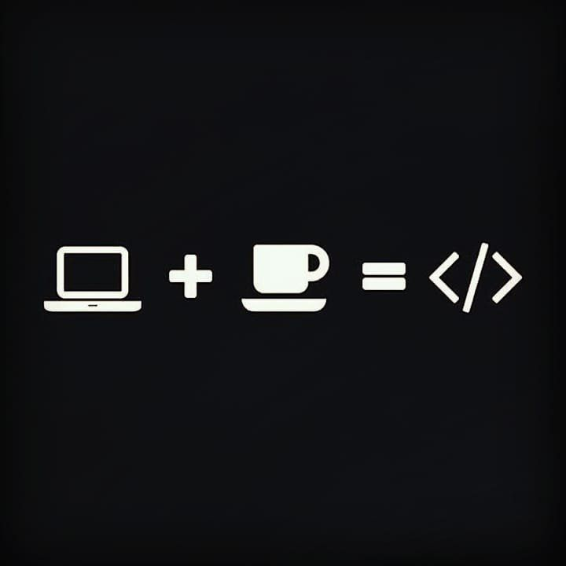

My Projects
-
Code-Tic-Tac-Toe-WLink
This project is written in Java and implements a classic Tic-Tac-Toe game. It demonstrates my skills in game logic, algorithm design, and Java programming. You can clone the repository using the following link:
View on GitHub -
Indominus_2023
This project, written in Java, is the code for a robot designed for the FIRST Robotics Competition (FRC). It showcases my ability to work with robotics frameworks, control systems, and the iterative design process. Clone the repository here:
View on GitHub -
ToDo-Application
A mobile application written in Dart that allows users to create and manage a to-do list. This project highlights my skills in Flutter development, UI/UX design, and state management. Explore the code using this link:
View on GitHub -
Nike-Application
A Dart-based mobile application that replicates features of the Nike app, including a product catalog with images of shoes, a shopping cart, and user interaction capabilities. This project demonstrates my advanced Flutter development skills. Clone it using the link below:
View on GitHub